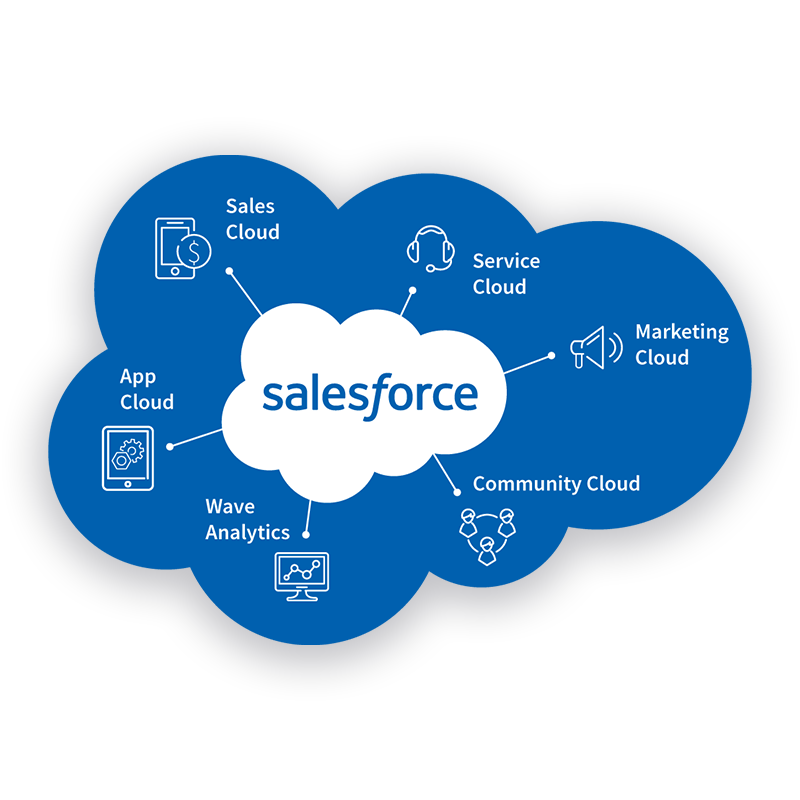

What is Community Cloud?
The Community Cloud is a digital experience platform and allows companies to
connect customers, partners and employees with each other and with the data and records needed to
get the job done.
Community Cloud allows you to streamline key business processes and extend them across offices and
departments, and outward to customers and partners. So everyone in your business ecosystem can
service customers more effectively, close deals faster, and get work done in real-time.
Know more about Salesforce Community Cloud
How secure is Community Cloud?
Community Cloud is built on the trusted Salesforce platform. The robust and flexible security
architecture of the platform is relied on by companies around the world, including those in the
most heavily regulated industries — from financial services to healthcare to government. It
provides the highest level of security and control over everything from user and client
authentication through administrative permissions to the data access and sharing model.
Trust starts with transparency. Salesforce displays real-time information on system
performance and security and offers tips on best security practices for your organization.

What are some common ways to use Community Cloud for employees?
HR and IT Help Desk can engage employees and deliver critical knowledge and instructions. And
from onboarding to payroll to IT troubleshooting, employees can help themselves to the
information they need, 24/7.
Employees find, share, and collaborate on content in real-time, and connect with others in the
social intranet — beyond the boundaries of their department, office, or even country.
What are some common ways to use Community Cloud for customers?
Self-service empowers customers to find answers to their questions with a searchable knowledge
base, and work together to answer one another’s questions and solve problems, dramatically
reducing service cases while increasing customer satisfaction.
Community engagement leverages passionate consumers as “experts” within the community to be
rewarded for helping other customers. These evangelists help lend a human face to your brand —
and promote deeper customer loyalty.
Empowered e-commerce enables customers to track their accounts, and connect to other customers
to share experiences with the product, add reviews, and even suggest product improvements.
What are some common ways to use Community Cloud for partners?
A partner knowledge portal allows you to give your entire channel immediate access to the
resources and experts they need, such as critical sales assets and product information, and even
provide training and certification courses to keep your sales organization running smoothly.
A channel sales community connects your internal and external sales teams in real-time, so
partners can collaborate directly on sales records, easily track revenue, monitor pipe
generation to reduce deal friction — and make deals happen.